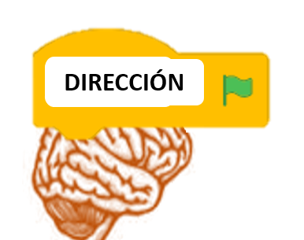
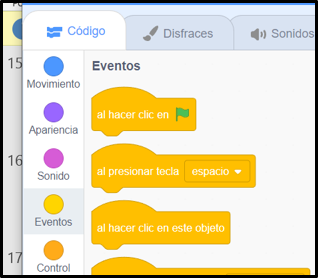
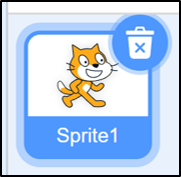

Hasta ahora has estado explorando el entorno de programación de Scratch.
La programación por bloques de Scratch te facilita planificar las acciones que quieres que realicen en tu proyecto de una forma intuitiva y lógica.
Confía en nuestro gato Scratch y aprenderás mucho más
1. ¿Preparado para la acción?

Para la representación que queremos hacer hace falta un director o directora, el “cerebro” que piense y dé las órdenes. En el mundo del cine y el teatro, el director o directora da las órdenes o instrucciones necesarias para la puesta en escena: aparición/desaparición de objetos y actores/actrices, movimientos, diálogos….
En Scratch estas órdenes se programan desde la pestaña código, de una forma lógica y ordenada, igual que lo hace nuestro cerebro.
Estas órdenes en Scratch se muestran en forma de bloques, clasificados en varias categorías con distintos colores. Debes empezar por un bloque de Eventos, recuerda que es como la gorra del director o directora.
Todas las instrucciones (bloques) que necesitas se unirán al primer bloque de eventos a modo de puzle, desplazándose al área de programación. Cada objeto tendrá su propio programa.
Para ello se selecciona dicho objeto y se hace clic en la pestaña código:
Definición:
Es una herramienta para programar fácil.
Ejemplo:
Con Scratch puedo programar presentaciones interactivas.

Definición:
Lugar donde se encuentran los bloques de código.
Los bloques de código le dicen al programa lo que debe hacer.
Ejemplo:
En la pestaña de código selecciono las instrucciones que necesito.
Definición:
Distintas partes de Scratch que se pueden controlar.
Ejemplo:
En la categoría de movimiento le digo al personaje qué hacer.
Definición:
Cajas de instrucciones para que los personajes y demás elementos hagan cosas.
Ejemplo:
El personaje hace lo que dice el bloque cuando hago click encima.
Definición:
Un grupo de instrucciones que se dan a una máquina o aparato para que haga algo.
Ejemplo:
El programa completo hace que el personaje se mueva mucho.

Definición:
Los elementos en Scratch. Incluye a personas, animales y cosas.
Ejemplo:
El objeto gato es el primero.
Lectura facilitada
Nuestro cerebro da órdenes en nuestro cuerpo.
También el director o directora dan órdenes en el teatro.
El director o directora toma decisiones sobre la escena.
1. Seleccionar el objeto. 2. Hacer click en la pestaña de código.
Definición:
Es una herramienta para programar fácil.
Ejemplo:
Con Scratch puedo programar presentaciones interactivas.
Definición:
Lugar donde se encuentran los bloques de código.
Los bloques de código le dicen al programa lo que debe hacer.
Ejemplo:
En la pestaña de código selecciono las instrucciones que necesito.
Definición:
Cajas de instrucciones para que los personajes y demás elementos hagan cosas.
Ejemplo:
El personaje hace lo que dice el bloque cuando hago click encima.
Definición:
Distintas partes de Scratch que se pueden controlar.
Ejemplo:
En la categoría de movimiento le digo al personaje qué hacer.
Definición:
Los elementos en Scratch. Incluye a personas, animales y cosas.
Ejemplo:
El objeto gato es el primero.
Definición:
Un grupo de instrucciones que se dan a una máquina o aparato para que haga algo.
Ejemplo:
El programa completo hace que el personaje se mueva mucho.
2. Tú mandas
Imagina que eres el director o directora y tienes que dar las instrucciones para que los personajes, objetos, decorados...te obedezcan.
Haz una lista en la que anotes las instrucciones necesarias para cada elemento de tu proyecto.
Recuerda que tienen que tener un orden lógico.
3. Controla los bloques
¡Hola! Espero que hayas disfrutado explorando la zona de programación de Scratch.
Has hecho una lista con las instrucciones necesarias para tu proyecto.
¿Sabrías sustituir cada orden por el bloque necesario? Un poco difícil todavía, ¿verdad?
Te los voy a clasificar y ordenar para que te quede claro y sepas cuáles tienes que utilizar en cada momento.
Los tipos de bloques más importantes y que debes conocer para realizar tu presentación son:
1. Inicio de programa
Son los denominados eventos.
Inician siempre el programa. Todas las instrucciones irán encajadas por debajo, ´por eso tiene esa forma tan especial.
Al producirse un evento comienza la ejecución.
Por ejemplo: Al hacer clic en bandera verde se ejecutarán todas las instrucciones que vienen a continuación.
2. Instrucciones
Permiten realizar distintas acciones:
2.1.Movimiento:
Grupo de instrucciones de color azul oscuro.
Te permitirán mover al objeto en x-y, girar tanto en sentido de reloj como sentido contrario, cambiar la dirección del objeto derecha-izquierda, arriba, abajo, posicionar al objeto en el lugar deseado, rebotar al objeto si se toca algún borde...
2.2. Apariencia:
Grupo de instrucciones de color morado.
Te permitirá cambiar de disfraz al objeto, decir algún comentario, aplicar algún efecto digital a la imagen de disfraz, cambiar tamaño, mostrar, esconder, enviar al frente, enviar hacia atrás un nº de capas...
2.3 Sonido:
Grupo de instrucciones de color rosa.
Te permitirá tocar algún sonido desde archivo, una nota musical en específico, cambiar el volumen...
2.4. Control:
Grupo de instrucciones de color naranja.
Este bloque de instrucciones tiene la opción de detectar eventos o acciones realizados por otros objetos y reaccionar a ellos.
También permite detectar el teclado y reaccionar a alguna tecla presionada.
3. Estructuras
Grupo de bloques de color naranja, con forma de una especie de bocadillo, para colocar dentro otra serie de instrucciones.
Permiten agrupar distintas acciones con distintos propósitos:
3.1 Repetirlas un número de veces.
3.2. Ejecutarlas siempre en modo bucle, es decir cuando llegue a la última instrucción volverá a ejecutar la primera.
 Hasta ahora has estado explorando el entorno de programación de Scratch.
Hasta ahora has estado explorando el entorno de programación de Scratch.

 Definición:
Definición: Definición:
Definición: Definición:
Definición: Definición:
Definición: